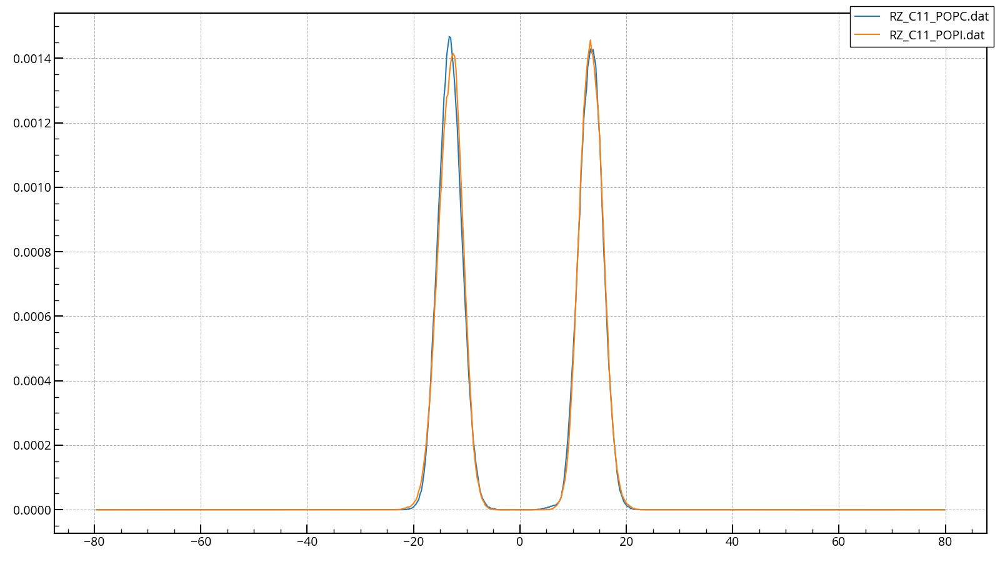

matplotlib¶
gnuplot同様に、グラフのプロットができるpythonのライブラリ。
ただ、学習コストが高い（難しい）ため備忘録もかねてここに使い方を記す。
便利なpythonスクリプト¶
以下は田中が作成したすぐにグラフのプロットができるスクリプトである。
git からダウンロードできるようにしたので、適当なディレクトリ（ホームディレクトリを推奨）に移動し、
cd ~
git clone https://github.com/tanaty5828/pymodules.git
とすると、~/pymodules/に様々なpythonスクリプトがダウンロードされる。
これにエイリアスを当てると便利。
(以下を~/.bashrcに追記)
alias fplot='python ~/pymodules/fplot.py'
編集が終わったらsource ~/.bashrcを忘れずに
こうすると、
fplot <plotしたいファイル名(複数OK)>
で簡易的にプロットができるようになる。
（例）
fplot RZ_C11_POPC.dat RZ_C11_POPI.dat

となる。
様々なオプションが利用できるので、fplot -hとするとその詳細が見られる。